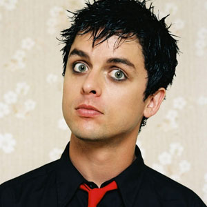
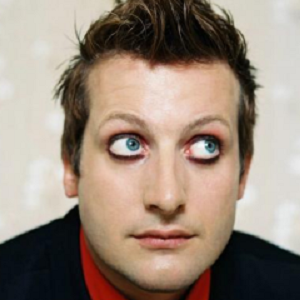

Members of Green Day
There are three main members of Green Day at the time. The band is formed by:
- Billie Joe Armstrong - guitar, vocal
- Mike Dirnt - guitar
- Tré Cool - drums


These are probably the faces, which are familiar for all of us. However, only some people know, that there were some other members of the group back then.
One of them is Jason White, who used to be a Green Day member between years 2012 and 2016. Jason also supports the band even in these days.
Past members:
- Jason White - guitar
- Raj Punjabi - drums
- John Kiffmeyer - drums